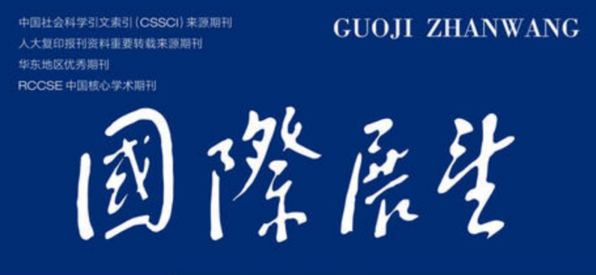

收录于合集


选 题 预 告
本刊采取专题设计与自由来稿结合的刊文办法，一方面积极刊发符合本刊定位的自由来稿，另一方面适时预报专题选题进行组稿，欢迎各位同仁踊跃赐稿。其中对应预报选题的来稿，截稿期为该期出版日期三个月前。
2020 年第 1 期 ：当前，一些国际势力围绕债务问题攻击和抹黑他国，对中国融资的过度炒作和恶意描述是债务问题政治化的突出反映。为此，有必要阐明发展中国家普遍存在债务问题的根源，传统的国家债务治理模式存在的问题，应该如何反思和改革债务治理体系，如何使中国融资的“债务陷阱论”“债务威胁论”等不攻自破。第 1 期拟讨论债务相关问题。
2020 年第 2 期： 近年来，国际军控领域一些问题升温，成为焦点。例如自主武器可能失控、外空军备竞赛形势严峻、美国执意退出《中导条约》引发国际担忧等。第 2 期拟围绕今后国际军控问题展开讨论。例如，国际军控与裁军的新发展新特点，面临的新问题新挑战，发展变化动因，改进与加强的方法、路径、策略，军控机制的形成、发展和未来演变方向，大国军控政策，中国的军控对策等。
2020 年第 3 期： 人类社会正加速从工业文明进入数字文明，技术创新合作的国际生态环境构建面临重大挑战。在数字经济的科技和创新国际合作领域，日益凸显的是“技术主权” 关切，甚至出现“技术民族主义”趋势。为应对挑战，我们需要管理好数字经济时代产业生态环境的重大变化及其冲击，为中国占领、巩固在全球价值链、供应链、产业链的高端位置塑造开放合作的国际生态环境。第 3 期计划对此进行讨论。
2020 年第 4 期： 我们正在进入第三波世界现代化的“换挡转型”阶段，它以新兴经济体和发展中国家群体性崛起为标志。而世界政治则开启了“后西方中心”进程，这导致守成和新兴大国战略竞争加剧、战略不稳定上升。同时，英国脱欧使人们对欧洲一体化和民族国家体系产生新思考。在美国的自由资本主义和以中国为代表的一些新兴经济体的发展道路之外，所谓的欧洲第三条道路未来会向何处去，今后世界体系和秩序会怎样发展？第 4 期拟对国际秩序等相关问题加以讨论。
2020 年第 5 期： 当前正处于逆全球化和新型全球化并存和相互激荡的时期，新型全球化将是更加平衡的全球化。传统全球治理模式正发生深刻变化。中国作为全球治理体系的维护者、建设者、改革者，如何管理好逆全球化和新型全球化并存和相互激荡对全球治理体系形成的冲击，如何为中国继续在全球治理体系重组重构中持续提升制度性权力塑造有利的战略环境，第 5 期将讨论相关问题。
2020 年第 6 期： 拟对新时代中国特色大国外交能力建设研究中的一些具体问题展开讨论。例如，在 2021 年迎来中国共产党成立一百周年之际，本刊拟对政党外交进行探讨。中国对国际组织的工作以及在国际组织平台上如何开展外交活动，也是需要关注的方面。而其他各种“非国家力量行为体”与中国对外工作的关系及其应对或运用，也值得关注，特别是其作用机理、其应对以及如何借力等。
《国际展望》由上海国际问题研究院主办、上海市国际关系学会协办，国内外公开发行，为国际问题研究类学术双月刊。本刊刊文突出战略视野和问题意识，强调论文的前瞻价值。目前刊文以国际关系、国际政治经济学、战略层次的国际经济问题研究为主。来稿字数一般在 1.2—1.5 万字之间。论文请发至本刊投稿邮箱：gjzw01@sina.com。请勿一稿多投。稿件一经采用，即致稿酬，稿费（含信息网络传播和数字发行稿酬）从优，并赠样刊两本。本刊往期已刊发论文可在上海国际问题研究院网站浏览，网址为 http://www.siis.org.cn/（或点击左下角阅读原文），敬请关注。
本刊为正规学术刊物，目前唯一投稿邮箱为 gjzw01@sina.com，除此之外未委托其他任何机构代办投稿。凡本刊发表论文，不以任何名义收取费用。
_ ** _ ** _ ** _ 本文由国政学人编辑推广**__
扫下方二维码查看往期精彩

▲分类导览 1
▼分类导览2